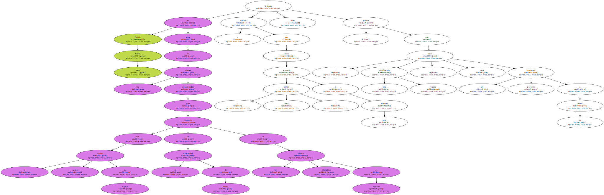
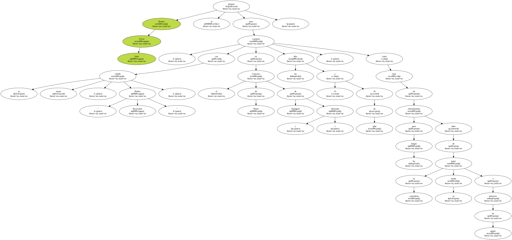
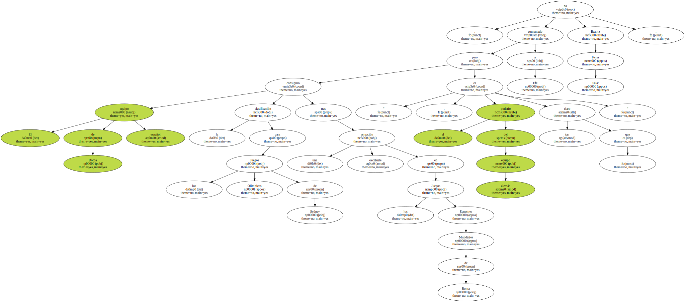
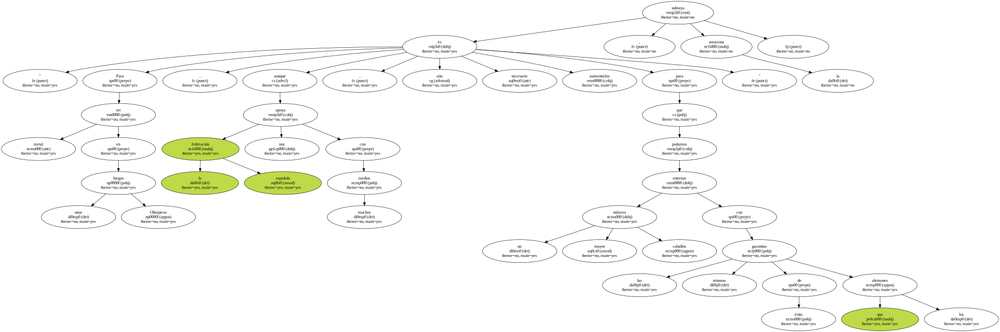
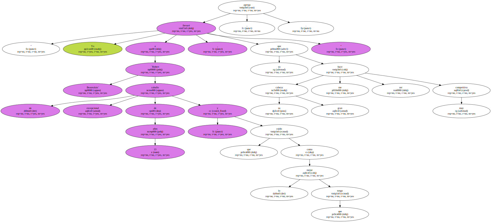
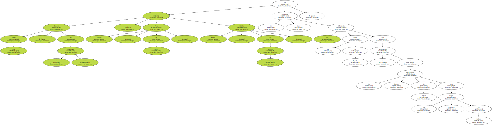
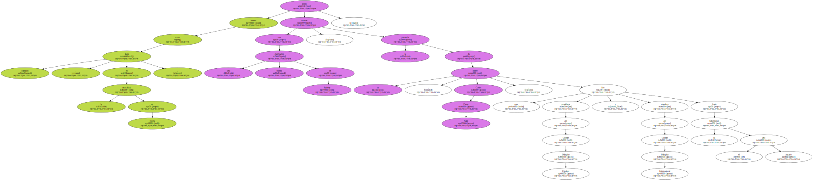

Beatriz Ferrer Salat es uno de los jinetes seleccionados para competir con el equipo español de hípica en la modalidad de doma en los Juegos Olímpicos de Sydney , confiesa , que tiene " muy difícil " acercarse a una medalla , pero piensa que " hacer una buena clasificación " será un pequeño homenaje a su.
Beatriz Ferrer Salat se prepara para competir , con su mejor caballo , " Robert Beauvalais " , en el Concurso de Doma de Aquisgrán ( Alemania ) los días 15 y 16 de julio , como base de entrenamiento para los Juegos antes de poner en cuarentena su monta a primeros de agosto.
" El equipo de Doma español consiguió la clasificación para los Juegos Olímpicos de Sydney tras una excelente actuación en los Juegos Ecuestres Mundiales de Roma , pero el poderío del equipo alemán es tan claro que ... " , ha comentado a Efe Beatriz Ferrer Salat.
" Para ser metal en unos Juegos Olímpicos , aunque la federación española nos apoya con muchos medios , aún es necesario aumentarlos para que podamos entrenar un número mayor caballos con las mismas garantías de éxito que los alemanes " , subraya la amazona.
Los jinetes de Doma Clásica que vayan a competir en Australia llevaran sólo su mejor caballo , pues transportar más de uno es impensable por su alto coste económico.

" Yo llevaré a `Robert Beauvalais´ un caballo excepcional de 13 años , y que cuido como lo mejor que tengo , ya que su gran cabeza me hace ser muy competitiva " , agrega.
Beatriz Ferrer Salat , en la modalidad doma , Pilar Cordón , en saltos , y Natalia Valdés , en concurso completo , son las tres amazonas que defenderán los colores de España con su participación en las distintas modalidades de hípica para los Juegos Olímpicos de Sydney.
Beatriz como jinete olímpico , en la modalidad de Doma , desea honrar con una buena clasificación en Sydney , la memoria de su padre , Carlos Ferrer Salat , que fue presidente del Comité Olímpico Español y miembro del Comité Olímpico Internacional hasta su fallecimiento el año pasado.
